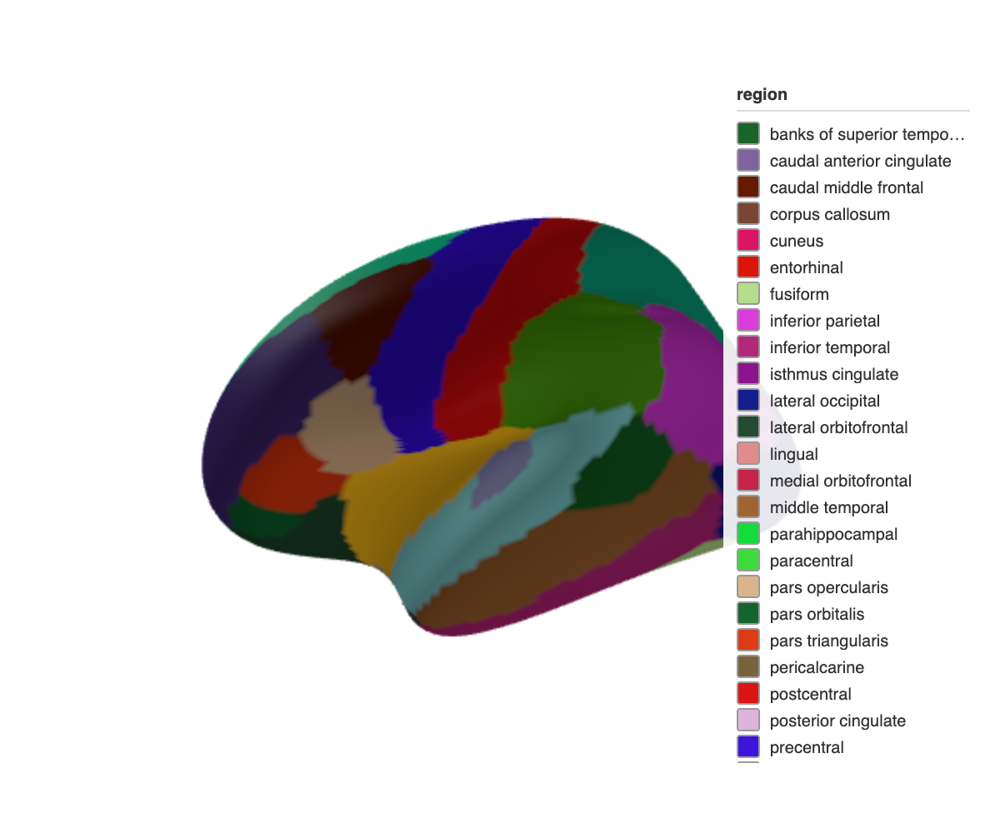
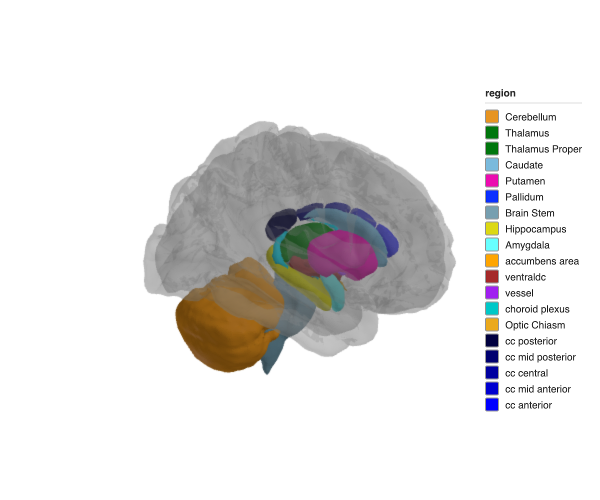

Interactive 3D brain atlas visualization in R. Plot brain parcellations as WebGL meshes powered by Three.js, or render publication-quality static images through rgl and rayshader. A pipe-friendly API lets you map data onto brain regions, control camera angles, toggle region edges, overlay glass brains, and snapshot the result.
Installation
Install from CRAN:
install.packages("ggseg3d")Or get the development version from the ggsegverse r-universe:
options(
repos = c(
ggsegverse = "https://ggsegverse.r-universe.dev",
CRAN = "https://cloud.r-project.org"
)
)
install.packages("ggseg3d")Atlases
Three atlases ship with the package (via ggseg.formats):
-
dk– Desikan-Killiany cortical atlas -
aseg– Automatic subcortical segmentation -
tracula– White-matter tract atlas
Additional atlases are available through the ggsegverse r-universe.
Usage
ggseg3d(atlas = dk(), hemisphere = "left") |>
pan_camera("left lateral")
Subcortical structures with a translucent glass brain overlay:
ggseg3d(atlas = aseg()) |>
add_glassbrain() |>
pan_camera("right lateral")
See the package website for the full walkthrough, rayshader rendering, and Shiny integration.
Citation
Mowinckel & Vidal-Piñeiro (2020). Visualization of Brain Statistics With R Packages ggseg and ggseg3d. Advances in Methods and Practices in Psychological Science. doi:10.1177/2515245920928009